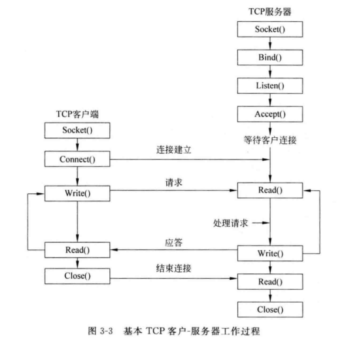
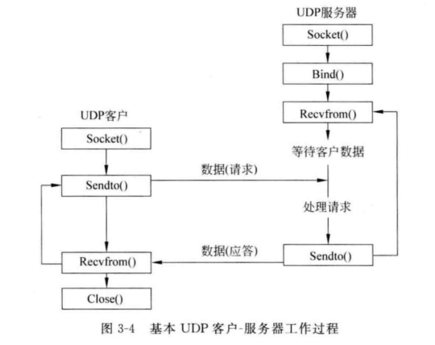
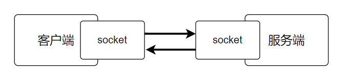

internet_programming
网络通信
框架


套接字

函数说明
WSAStartup & WSACleanup
在程序创建第一个套接字之前使用WSAStartup()初始化 Windows 套接字的动态连接库
程序结束后执行WSACleanup清除
1 | WINSOCK_API_LINKAGE int WSAAPI WSAStartup(WORD wVersionRequested,LPWSADATA lpWSAData); |
其中WSAStartup()第一个参数传入MAKEWORD(2, 0), 这是一个宏定义. 第二个参数传入一个WSADATA类型数据的地址, 用于存储WSAStartup()返回的一些信息
socket
创建套接字
- 协议族, socket中只能是
AF_INET(这是说明IP地址为IPv4类型) - 协议类型,
SOCK_STREAM代表使用TCP,SOCK_DGRAM代表UDP - 具体协议, 0会自动选择协议
connect
客户端向服务器请求连接, 返回0代表连接成功
- socket函数返回的值
- 指明目标服务器的协议族, IP, 端口
- 第二个参数的大小, 使用
sizeof即可
send
用于向TCP的另一端发送数据, 返回发送的字节数
- 发送端的套接字描述符, 由
socket函数创建 - 发送数据的内存地址(可以是基本数据类型, 数组, 结构体, 字符串)
- 指明要发送的字节数
- 设置为0
recv
用于接收另一端socket发送过来的数据, 如果没有收到会一直等待, 收到则返回收到的字符数. 返回-1代表出错, 0代表socket关闭.
- 接收端的套接字描述符, 由
socket函数创建返回 - 接受数据的内存地址(可以是基本数据类型, 数组, 结构体, 字符串)
- 需要接受的字节数(不能超过第二个参数指定的缓冲区大小)
- 设置为0
close
关闭套接字, 并终止TCP连接, 成功返回0, 失败返回-1.
bind
服务端把用于通信的地址和端口绑定到socket上，当bind函数返回0时，为正确绑定，返回-1，则为绑定失败.
- 需要绑定的socket, 由
socket函数创建 - 服务端的通信地址(IP)与端口
- 第二个参数的大小(使用
sizeof即可)
listen
当有较多的client发起connect时，server端不能及时的处理已经建立的连接，这时就会将connect连接放在等待队列中缓存起来. 这个等待队列的长度有listen中的backlog参数来设定. 当listen运行成功时，返回0；运行失败时，返回值为-1.
listen函数使进程从指定的套接字开始接收连接消息, 类似一个开关
socket函数创建的套接字, 从这个套接字接收连接消息- server可以缓存的连接最大个数, 即等待队列的长度
accept
accept函数等待客户端的连接，如果没有客户端连上来，它就一直等待. accept等待到客户端的连接后，创建一个新的socket，函数返回值就是这个新的socket，服务端用这个新的socket和客户端进行报文的收发.
- 被
listen过的socket - 存放客户端的地址信息(协议族, IP, 端口)
- 存放第二个参数的大小
recvfrom
UDP中用于接收数据的方法
int recvfrom(int s, void *buf, int len, unsigned int flags, struct sockaddr *from,int *fromlen);
- 接收数据的套接字
- 接收数据的缓冲地址
- 缓冲区大小(使用sizeof)
- 设置为0
- 用于存储发送数据的网络地址
- 第五个参数的大小(使用sizeof)
sendto
UDP用于发送数据的方法
int sendto(int s, const void * msg, int len, unsigned int flags, const struct sockaddr * to, int tolen);
- 发送数据的套接字
- 发送的数据地址
- 数据的长度
- 设置为0
- 指定目的网络的地址
- 第5个参数的大小(使用sizeof)
TCP
基本流程
 微信(Wechat)
微信(Wechat) 支付宝(Alipay)
支付宝(Alipay)